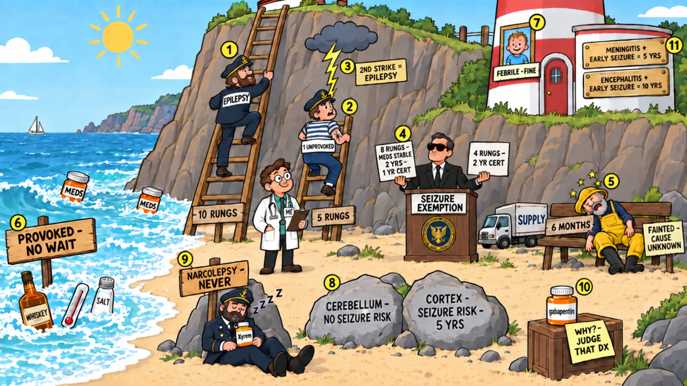

Card 9 of 13 · 49 CFR 391.41(b)(8)
The Lighthouse Keeper's Ladder
Seizures and loss of consciousness — epilepsy, single seizures, the seizure exemption, provoked seizures, narcolepsy.

0:00 / 0:00
Press play — the narrator walks the scene and the spotlight follows to each numbered object. Click any paragraph to jump there. Space play/pause · ←/→ previous/next object · [/] previous/next card.
Not started — press play, then try the questions.
What this card covers
Seizures and loss of consciousness — epilepsy, single seizures, the seizure exemption, provoked seizures, narcolepsy. Standard: 49 CFR 391.41(b)(8).
The hooks to keep
- Epilepsy climbs ten rungs off meds
- One unprovoked seizure climbs five
- Second strike makes it epilepsy
- Exemption: eight rungs with two stable years, or four
- Unexplained faint waits six months
- Narcolepsy never; ask why for gabapentin
Test yourself
9 questions on this card
Answer each question to see the explanation, its sources, and the cheat-sheet entry.